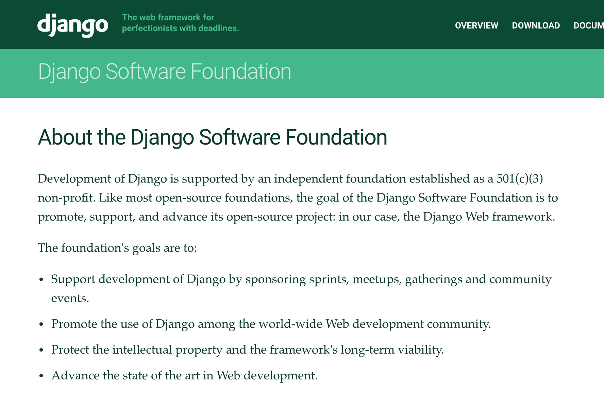
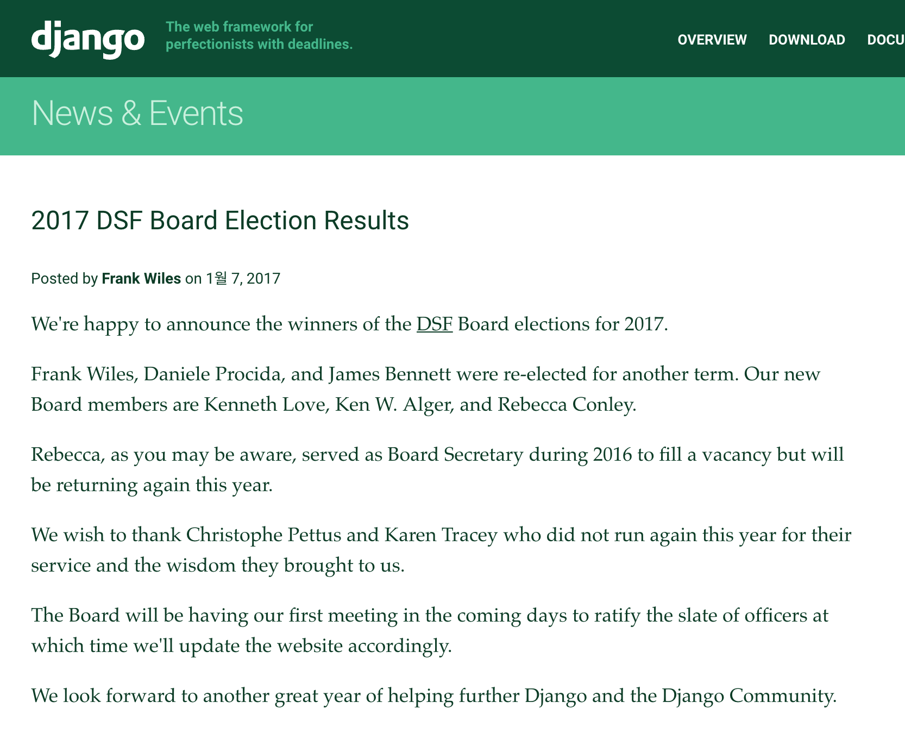

2017 Django 소프트웨어 재단의 이사회가 선출되었습니다.
파이썬을 사용하시는 분들께는 파이썬 소프트웨어 재단이 잘 알려져 있을 텐데요. 작년 6월에는 한국인으로는 최초로 김영근 님이 파이썬 소프트웨어 재단의 이사회 멤버로 선출되면서 더 많이 알려진 듯 합니다. (관련 소식과 인터뷰 기사)
Django에도 Django 소프트웨어 재단이 존재하는데요.

2017년을 맞아 새 이사회가 구성되었습니다.
2016년에 이어 2017년에도 이사회 멤버가 된 사람들은 다음과 같습니다.
2017년에 새롭게 이사회에 들어간 사람들은 다음과 같습니다.
2016년에 수고해 준 분들은 다음과 같습니다.

이사회가 뭘 하는지 궁금하실 텐데요. Django 소프트웨어 재단의 목적을 잘 이행하기 위해 정기/비정기적으로 회의를 하고 예산을 집행한다고 합니다.
Django 소프트웨어 재단의 목적은 다음과 같습니다.
- 스프린트, 밋업, 모임, 커뮤니티 행사 등을 후원함으로써 Django 개발을 지원합니다.
- 전 세계 웹 개발 커뮤니티에 Django 사용자를 확산시킵니다.
- 지적 재산권과 프레임워크의 장기적 지속 가능성(long-term viability)을 보호합니다.
- 웹 개발의 기술 수준을 높입니다.
공개된 회의록은 Django 공식 홈페이지에서 보실 수 있습니다. https://www.djangoproject.com/foundation/records/